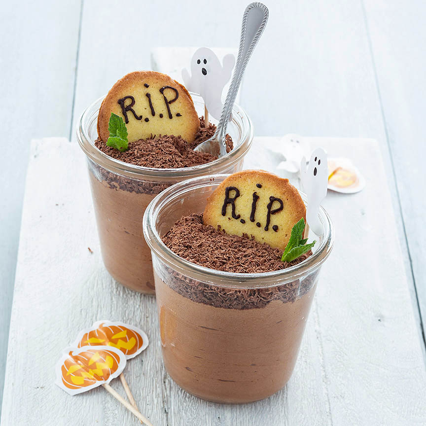

Halloween chocolademousse
Deze chocolademousse in een glaasje met een koekje als grafsteen is een perfect toetje voor Halloween
Ingredienten
- 125 gr pure chocolade
- 125 gr melk chocolade
- 3 eiwitten
- 75 gr suiker
- 250 gr slagroom
Bereiding
- Smelt de pure en melk chocolade au bain marie in een kom boven een pan met heet water
- Klop ondertussen de eiwitten stijf in een vetvrije kom. Doe de suiker er beetje bij beetje bij tijdens het mixen
- Klop in een andere kom de slagroom stijf.
- Schep de gesmolten chocolade voorzichtig door de slagroom, en als deze is opgenomen spatel je de eiwitten er door.
- Klop niet te lang ander klop je de lucht er uit.
- Verdeel de chocolademousse over 4 glaasjes en laat minimaal 3 uur opstijven in de koelkast
- Rasp de pure chocolade. Schrijf met de chocolade stiften R.I.P. op de koekjes.
- Je kunt ook een beetje gesmolten chocolade in een plastic zakje doen en een hele kleine punt van een hoekje afknippen en dit als stift gebruiken
- Duw de koekjes een stukje in de chocolademousse zodat ze rechtop blijven staan, laat ze eventueel tegen het glas leunen.
- Bestrooi de mousse rondom het koekje met de chocolade rasp.
- Duw een plukje munt er in en decoreer eventueel met andere Halloween decoratie
- De prikkers met spookjes heb ik gekocht in een Halloween bakset bij de Action

Tip:Kookt het liefst makkelijk en snel, maar wel met een leuke twist. Geen gekke ingrediënten of moeilijke technieken, gewoon simpel en leuk!